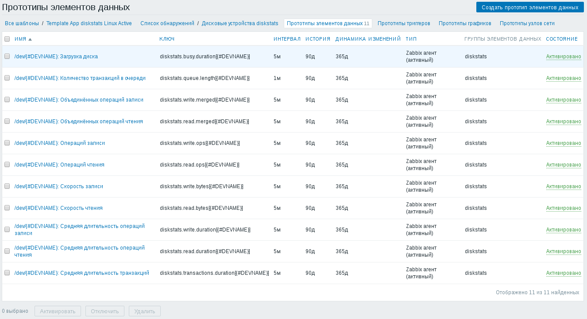
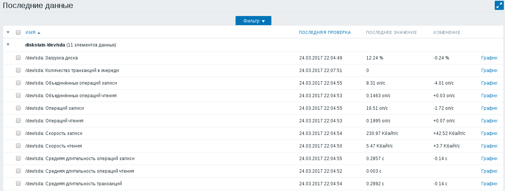

Как и во FreeBSD, для оценки производительности дисковой подсистемы Linux тоже можно воспользоваться утилитой iostat. Однако, в отличие от версии iostat из FreeBSD, в iostat из Linux нет опции, позволяющей выводить накопленные значения счётчиков. Чтобы получить полную статистику за интересующий нас интервал времени, можно воспользоваться файлом /proc/diskstats из специальной файловой системы /proc. Эта файловая система позволяет узнавать состояние различных подсистем ядра Linux и менять некоторые настройки.
Всё то, что я писал относительно FreeBSD, справедливо и для Linux: полную картину нагрузки на дисковую подсистему можно получить только собирая статистику за достаточно долгий срок. Имея полную статистику за неделю, можно найти периоды максимальной нагрузки и связать их с периодически выполняющимися в системе задачами, что позволит, например, подобрать оптимальное время запуска процедуры резервного копирования.
В этой статье речь пойдёт о том, как собирать статистику из файла /proc/diskstats в Zabbix. Этот метод я считаю более правильным, чем встречающиеся в интернете шаблоны, использующие для сбора статистики программу iostat, работающую некоторое время. Как я уже говорил, во-первых, такой способ не позволяет собрать статистику в промежутках между запусками команды, а во-вторых, приводит к необходимости использовать промежуточный файл, чтобы не ждать сбора статистики при запросе значения каждого отдельного счётчика.
Прежде чем что-то делать, ознакомимся с краткой документацией на этот файл по ссылке https://www.kernel.org/doc/Documentation/ABI/testing/procfs-diskstats. Значения столбцов этого файла таковы:
В этом файле имеется ссылка на ещё один документ - https://www.kernel.org/doc/Documentation/iostats.txt. В документе описываются те же самые колонки, но в нём пропущены первые три колонки, в которых указывается информация о самом диске. Применительно к столбцам файла /proc/diskstats там написано следующее:
Итак, что из этого удалось понять и что не удалось понять:
На вопрос о размере сектора я нашёл очень подробный ответ How to get disk read/write bytes per second from /proc in programming on linux?, суть которого сводится к тому, что размер сектора в этом файле жёстко зафиксирован и всегда равен 512 байтам.
Теперь приступим к настройке Zabbix-агента. Для этого впишем в его файл конфигурации /etc/zabbix/zabbix_agentd.conf следующие строки:
UserParameter=diskstats.discovery,/usr/bin/awk 'BEGIN { printf "{\"data\":["; } { if (NR > 1) printf ","; printf "{\"{#DEVNAME}\":\"" $3 "\"}"; } END { printf "]}"; }' /proc/diskstats
UserParameter=diskstats.read.ops[*],/usr/bin/awk '$$3 == "$1" { print $$4; }' /proc/diskstats
UserParameter=diskstats.read.merged[*],/usr/bin/awk '$$3 == "$1" { print $$5; }' /proc/diskstats
UserParameter=diskstats.read.bytes[*],/usr/bin/awk '$$3 == "$1" { print 512 * $$6; }' /proc/diskstats
UserParameter=diskstats.read.duration[*],/usr/bin/awk '$$3 == "$1" { print $$7; }' /proc/diskstats
UserParameter=diskstats.write.ops[*],/usr/bin/awk '$$3 == "$1" { print $$8; }' /proc/diskstats
UserParameter=diskstats.write.merged[*],/usr/bin/awk '$$3 == "$1" { print $$9; }' /proc/diskstats
UserParameter=diskstats.write.bytes[*],/usr/bin/awk '$$3 == "$1" { print 512 * $$10; }' /proc/diskstats
UserParameter=diskstats.write.duration[*],/usr/bin/awk '$$3 == "$1" { print $$11; }' /proc/diskstats
UserParameter=diskstats.queue.length[*],/usr/bin/awk '$$3 == "$1" { print $$12; }' /proc/diskstats
UserParameter=diskstats.busy.duration[*],/usr/bin/awk '$$3 == "$1" { print $$13; }' /proc/diskstats
UserParameter=diskstats.transactions.duration[*],/usr/bin/awk '$$3 == "$1" { print $$14; }' /proc/diskstats
После внесения изменений в файл конфигурации Zabbix-агента, не забудьте его перезапустить:
# /etc/init.d/zabbix-agent restart
Я подготовил два варианта шаблона:
В шаблоне имеется правило низкоуровневого обнаружения, которое находит все дисковые устройства, статистику по которым выдаёт diskstats:
Если часть устройств кажутся вам лишними, в настройках правила обнаружения на вкладке "Фильтр" можно задать регулярное выражение, которое будет совпадать только с интересующими вас файлами дисковых устройств.
Для каждого найденного устройства создаются одиннадцать элементов данных, соответствующих колонкам производительности диска из файла diskstats:
Страница последних данных для одного из дисков выглядят следующим образом:
Элемент данных с названием "Загрузка диска" показывает процент времени, в течение которого диск занимается обработкой хотя бы одной транзакции.